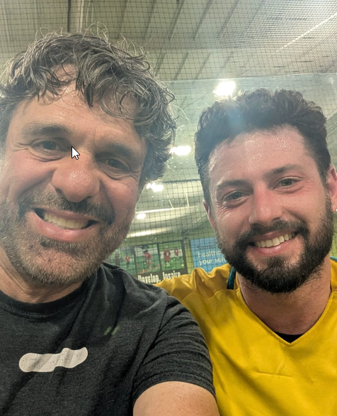
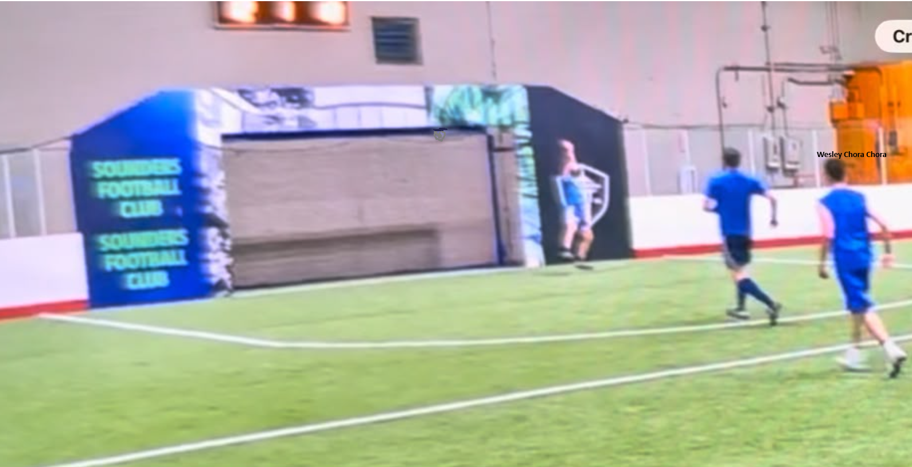

| J | V | E | D | GP | GC | Pts | |
|---|---|---|---|---|---|---|---|
| Brasil | 1 | 1 | 0 | 0 | 17 | 16 | 3 |
| Italia | 1 | 0 | 0 | 1 | 16 | 17 | 0 |
A Pelada 12 de 12 tinha tudo para ser só o fechamento da temporada. Mas era sexta-feira, 12 de junho, dia dos namorados. E quando o Woodenlegs marca pelada no dia dos namorados, naturalmente aparece o Cupido. Só que esse Cupido veio de chuteira profissional, assessoria de imprensa e uma equipe de filmagem que parecia estar gravando documentário da Cazé TV.
Na quinta-feira, antes da pelada, recebemos um comunicado do departamento de relações públicas de uma pessoa muito famosa. "Por favor aguarde na linha que nós vamos passar a ligação." Do outro lado, nada mais nada menos que João Paulo, nosso querido volante número 6 do Sounders, campeão continental, ícone do futebol brasileiro e americano. Sem rodeio, foi direto ao assunto: apareceu uma pequena brecha no calendário e ele gostaria de preencher participando dessa pelada famosa do Woodenlegs.
Do lado de cá, com o coração palpitando, fingimos uma certa prepotência. Respondemos que iríamos consultar os jogadores para ver se alguém se disponibilizava a não comparecer, abrindo vaga para essa ilustre presença. Logicamente, estávamos curtos em jogadores porque vários preferiram ver Estados Unidos x Paraguai no primeiro jogo da Copa nos EUA. Mas oficialmente, vários atletas se sacrificaram nos corredores da instituição para que João Paulo pudesse jogar. Democracia plena. Transparência total. Nenhuma manipulação de bastidor.
Como da outra vez, João Paulo adotou um pseudônimo. Dessa vez: Paulinho Cupido. Em plena sexta-feira de dia dos namorados, a escolha foi perfeita. Uma parte da audiência ficou ouriçada com o prospecto de ser flechada pelo Cupido. A outra parte ficou preocupada com a marcação individual.
Enquanto isso, sem nenhum apelo de celebridade, mas com a mesma vontade de participar, apareceu outro jogador interessado. Uma pessoa normal, de finanças, vivendo aquela rotina emocionante de olhar contas da Microsoft e se perguntar se a fórmula fecha. Ouviu rumores do Woodenlegs e ofereceu uma quantia bastante considerável para ser considerado para uma das vagas abertas. Guilherme, ex-terminador de futuros, tentou lobby forte nos corredores da casa branca por semanas. Finalmente, nesta sexta, viu sua sorte mudar.
A bola rolou e João Paulo rapidamente foi trazido à realidade humana. Ninguém sabia onde ninguém estava. Passe errado, chute para cima, gente correndo para o lugar de onde a bola já tinha saído. Aos poucos, o semblante dele foi se transformando naquela pergunta universal: "no que foi que eu me meti dessa vez?"
Mas aí veio a pintura. Depois de muita frustração, Paulinho Cupido pegou a bola do goleiro lá pertinho da linha do gol e começou a dança mais bonita que o Woodenlegs já viu. Passou por um, passou por dois, olhou para a torcida que vibrava de boca aberta, limpou mais um, voltou, fez de novo, parecia faca em manteiga derretida na relva plástica do Arena. Quando limpou o goleiro e o último jogador, o campo acabou. Mas não para ele.
Paulinho Cupido puxou a flecha e, de carrinho, mandou a bola para dentro. Está no vídeo. Levantou com olhos orgulhosos, esperando a consagração. Os jogadores em campo estavam paralisados. Até que uma voz tímida apareceu no silêncio: "quem vai avisar pra ele que não vale gol de carrinho?"

Ninguém teve coragem. Até ele querer ver o gol no placar. Nesse momento difícil, o cartola abriu um sorriso amarelo e disse: "cara, seu gol não valeu." E era gol de empate. Mas ali aconteceu o verdadeiro batismo. A partir daquele momento soubemos que nosso querido JP tinha se convertido ao nosso amor. A flecha tinha acertado o próprio coração. Agora ele era um de nós: fez golaço, foi roubado pela regra, reclamou, aceitou, e continuou jogando.
E como se não bastasse, Cupido validou os gols que valiam. Foram 7 gols oficiais. Sete. Artilheiro da noite. O Brasil ganhou por 17 x 16 e, se alguém perguntar, a diferença foi exatamente a burocracia do carrinho. O amor venceu, mas o regulamento também teve seu momento.
Guilherme Ex-Terminador de Futuros também veio com as contas na cabeça. "Cinco mais cinco dividido por doze... será que vai faltar dinheiro no caixa ou será que eu consigo acertar o gol?" Acertou. Quatro vezes. Entrou como tryout, como quem ia auditar planilha, e saiu como se tivesse encontrado crédito escondido no orçamento. O homem de finanças viu a bola na rede, viu gente feliz, e entendeu que talvez a contabilidade do Woodenlegs seja simples: se teve gol, teve lucro.
Do lado azul, Barba fez 6 gols e ainda encontrou tempo para reclamar de cabeçada na nuca. A comissão médica registrou a queixa com seriedade, mas a arquibancada concluiu que ele talvez preferisse a bola em outra região anatômica. Barba reclamou, marcou, reclamou de novo, marcou de novo. É o pacote completo.
Baggio viu o Barba jogar e saiu inspirado. Disse: "acho que consigo voltar. É só fazer igual o Barba: ficar parado lá na frente." Essa frase deveria virar clínica oficial de retorno aos gramados. Módulo 1: não corra. Módulo 2: reclame. Módulo 3: faça seis gols e diga que está tudo difícil.
Leonardo Avemaria revelou que corre 20 a 25 km por semana. Ótima informação, mas chegou no dia errado. Da próxima vez a gente chama ele para jogar na segunda-feira, antes de correr tudo isso e chegar na sexta com a bateria em modo economia de energia.
Teve também o gol que não foi gol, só que foi. Um chute forte na gaveta. Bola dentro. Mas Wesley Chora Chora Silva não se conformou: "não vou permitir esse empate com gol fantasma." Problema: temos vídeo. E foto. A bola entrou e o gol contou, para desespero do Wesley, que cinco dias depois ainda reclama. O VAR do Woodenlegs é cruel porque às vezes ele tem razão.

No fim, foi uma pelada equilibrada, absurda e perfeita para encerrar a temporada: 33 gols, Brasil campeão por um, artilheiro convidado especial, Barba empilhando gol parado lá na frente, Wesley processando o VAR emocionalmente, e todo mundo lembrando por que essa bagunça funciona há tanto tempo.
Final feliz de Cupido no dia dos namorados. Brasil 17, Italia 16. A flecha entrou. O carrinho não.